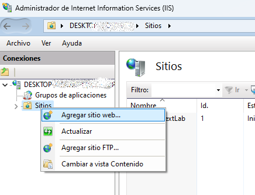
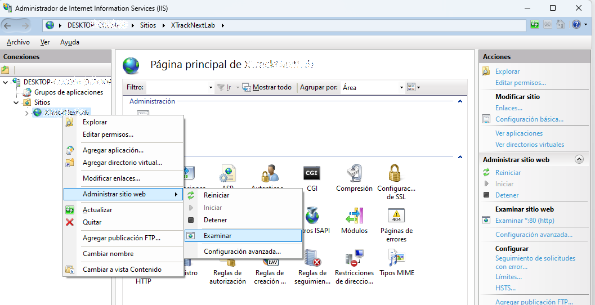

En este instructivo se verá cómo publicar un proyecto ASP.NET Core de forma local, con el servidor web de Windows IIS (Internet Information Services).
En appsettings.json
En caso de que se esté guardando información de configuración en User Secrets (secrets.json), trasladar esa configuración a appsettings.json.
Ej., cadena de conexión a la DB, claves de acceso a servicios externos, etc.
Si no se está usando User Secrets, desestimar este paso.
En Program.cs
Remover la condición para que Swagger funcione únicamente en entorno de desarrollo.
Antes:
//Configuración de HTTP request pipeline.
if (app.Environment.IsDevelopment())
{
app.UseSwagger();
app.UseSwaggerUI();
}
Después:
//Configuración de HTTP request pipeline.
app.UseSwagger();
app.UseSwaggerUI();
Esto nos permite acceder a la página de documentación interactiva de Swagger cuando el proyecto se encuentra en producción.
- Abrir Visual Studio como administrador.
-
Click derecho sobre el proyecto
Publish. Esto abre la ventana de administración de perfiles de publicación.
-
Entre las opciones de publicación, seleccionar Folder.
Click en "Next". -
Elegir la ruta de la carpeta donde se quiera publicar el proyecto.
Click en "Finish". Esto crea el perfil listo para publicar.
-
Hacer click sobre “Publish” para que se ejecute la publicación.
- Luego de esta acción, ir a la carpeta que se haya elegido como target para publicar el proyecto. Allí se podrá observar los archivos generados como resultado de la publicación.
-
Activar todas las características de IIS desde el panel de control:
-
Programas
Activar y desactivar características de windows. - Abrir cada subgrupo de características para comprobar que esté todo seleccionado.
- Luego de estos cambios, reiniciar el equipo.
-
Programas
-
Crear la carpeta donde voy a publicar la aplicación.
- Ej., C:\inetpub\wwwroot\MiWebAPI
- Ir al Administrador de IIS y crear un nuevo sitio web.
-
Click derecho sobre “Sitios”
Agregar sitio web… -
Elegir el nombre que se le quiera dar al sitio y seleccionar la ruta a la carpeta creada en el paso 2.
-
Ir a Grupos de aplicaciones o pool apps.
-
Seleccionar el sitio que se acaba de crear e ir a la opción “Configuración básica”.

-
Seleccionar la versión que corresponda, o bien se puede elegir la opción "Sin código administrado", para evitar inconvenientes relacionados con la versión de .NET que use el proyecto.

-
Examinar el sitio web para comprobar que esté corriendo correctamente:
NOTA:
Si se trata de un proyecto back-end, como es el caso de una API, es normal que no se muestre ningún contenido al examinar el sitio.
Para poder visualizar la página de documentación de Swagger, agregar a la url: /swagger/index.html
Ej., http://localhost:81/swagger/index.html